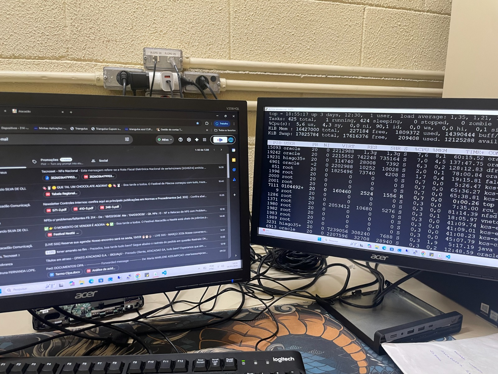

Meu final de semana é resumido em ter que ir trabalhar, atualmente trabalho com Suporte Técnico N1, ajudando todos da loja que precisarem de assistência relacionada a hardware e software, como manutenção de computadores, impressoras, configuração de redes, instalação de sistemas operacionais e auxiliando remotamente também, abrindo chamados e ajudando todos que precisarem de ajuda.
